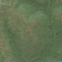
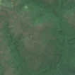

5,1 ha de pădure schimbată lângă Olari
Între vara lui 2025 și 25 aprilie 2026, pe aproximativ 5,1 ha de pădure din comuna Plopșoru, lângă Olari, județul Gorj, imaginile Sentinel-2 arată că vegetația a dispărut sau s-a schimbat puternic. E o schimbare care merită verificată.
Autorizația de tăiere
de confirmat pe poze
N-am găsit o autorizație care să acopere zona, dar nu putem spune ce s-a întâmplat aici: analistul AI fie n-a văzut încă pozele, fie le-a văzut și nu e sigur. Nu dăm roșu pe o bănuială, și nici nu spunem că e în regulă. Analistul înclină spre altceva decât o tăiere, dar nu e sigur. Printre astfel de zone au fost și tăieri reale.
Ce se vede în poze: Zona marcată era pădure deasă în poza detaliată. În poza «după» nu se vede un loc golit cu margini clare, ci doar o nuanță puțin mai maronie, asemănătoare cu alte porțiuni de pădure din jur.


Înainte și după: Copernicus Sentinel-2, 10 m pe pixel, conturul zonei cu portocaliu. Poza detaliată (Esri World Imagery) e de acum 1–4 ani: arată ce era acolo înainte, nu tăierea.
Pe scurt
- Identificator
- 20260425_44829_23363
- Locul
- Olari, comuna Plopșoru, județul Gorj (SIRUTA 81264)
- Coordonate (centru)
- 44.82926, 23.36317 · Google Maps · OpenStreetMap
- Suprafața
- 5,1 ha (din pixeli de 10 m; ± câțiva pixeli pe margine)
- Pădurea întreagă
- în vara lui 2025 (de atunci, nori sau iarnă)
- Prima imagine cu schimbarea
- 25 aprilie 2026
- S-a lărgit
- 25 aprilie 2026
- Imagini în care se vede schimbarea
- 15
- Cât de sigur e semnalul din satelit
- medie
- Autorizația cea mai apropiată
- APV 2600160301410 · Sc Ocolul Silvic Retezatul Clopotiva - Rau De Mori Srl, la 247 m de zonă
- Terenul
- pădure privată, după amenajamentul silvic publicat
- Arie protejată
- Coridorul Jiului
- Pădure pierdută în jur, alți ani
- 2008 (Hansen)
- Garda Forestieră
- Râmnicu Vâlcea
Dacă vrei să verifici sau să sesizezi
- Pădurile din județul Gorj sunt în grija Gărzii Forestiere Râmnicu Vâlcea, care controlează tăierile și dă amenzile.
- Autorizația găsită în zonă e emisă de Sc Ocolul Silvic Retezatul Clopotiva - Rau De Mori Srl.
- Formularul Gărzii Forestiere Naționale primește sesizări și fără nume. Trimite linkul acestei pagini, coordonatele și pozele. Dacă tăierea e în desfășurare, sună la 112.
- Autorizațiile și transporturile de lemn se pot căuta în Inspectorul Pădurii.
Pagina arată ce se vede din satelit și ce scrie în registrul public; nu e o dovadă în sine.
Cum citezi zona
Linkul acestei pagini nu se schimbă. Dacă zona iese vreodată de pe hartă, pagina rămâne, cu data și cu ce știam despre ea.
Pădurea RO, zona 20260425_44829_23363: 5,1 ha, Olari, comuna Plopșoru, județul Gorj; schimbare văzută din satelit între vara lui 2025 și 25 aprilie 2026. https://iliemihai.github.io/padurea-ro/zona/20260425_44829_23363/ (consultat la [data]). Date: CC BY 4.0.
Datele zonei: GeoJSON · toate zonele: date deschise · licența CC BY 4.0.
Istoricul zonei pe hartă
Starea se poate schimba când registrul publică o autorizație sau când analistul vede poze mai bune. O ținem aici, ca un link citat să arate și ce spuneam atunci.
Pe hartă cel târziu din 5 noiembrie 2026.
- 5 noiembrie 2026 – azi · de confirmat pe poze
Detalii tehnice, pentru verificare
De ce acest nivel de încredere:
- văzută schimbată în 15 imagini diferite
- peste 3 ha
- pădurea din jur e neschimbată
- ultima dată am văzut-o intactă în vara lui 2025 (de atunci, nori sau zăpadă)
- fără părerea AI
Ce a văzut analistul cu context: În poza detaliată din 2024 coroanele sunt continue pe tot conturul, dar în Sentinel-2 «după» nu apar sol dezgolit, resturi de exploatare, drumuri de colectare sau margini drepte; textura rămâne apropiată de pădurea învecinată. În imaginea largă mai multe versanți au aceleași pete maronii, ceea ce indică variație de sezon sau de lumină, iar autorizația cea mai apropiată (247 m, suprapunere 0%) nu explică o tăiere. Nu se exclude o rărire slabă sau uscare a arborilor, dar dovezile sunt insuficiente.
- Placa Sentinel-2
- 34TFQ
- NDVI de referință
- 0.79
- NBR de referință
- 0.55
- Scăderea în pădurea din jur
- 0.03
- Persistență
- 1.0
- NDVI / NBR după
- 0.654 / 0.334
- Analistul cu context (model)
- sezon_nori · 0.45
Cum se calculează fiecare: metodologia.
Pune harta zonei într-un articol
Copiază codul în articol (merge în majoritatea site-urilor de știri). Sau pune doar linkul: WhatsApp, Facebook și X arată singure poza zonei.